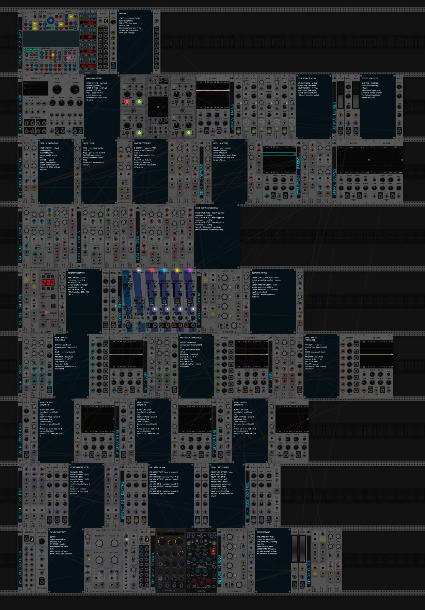

Robin
Touch and movement become part of a shared musical process between performer and instrument.
View projectI build instruments and systems that listen, translate, and respond—tracing what happens to meaning as it moves between bodies, media, machines, and environments.
Three systems, three forms of exchange.
Touch and movement become part of a shared musical process between performer and instrument.
View project
A listening study on what changes when emotional language is translated into sound.
View project
A room's sounds are reshaped and returned, becoming part of what the system hears next.
View projectRelated inquiries, not project appendices.
Two studies extend my interest in how systems perceive, interpret, and shape human expression.
Digital musical instruments often treat bodily movement as sensor noise. Recordings from Robin, a custom gesture-based instrument, show that expressive movements—including rapid rolls—can appear noise-like in conventional analyses while retaining structured, nonlinear patterns. Across nine movement channels, these findings reveal that musical gestures are more organized than simple random fluctuations, and that spectral analysis alone can miss this structure.
02This paper examines AI alignment through the lens of Foucault’s theory of discipline. Across several language models, we find that preference-based training can make safe behavior dependent on surveillance cues, reduce linguistic diversity, and increase agreement with false claims from apparent authorities. These results suggest that behavioral conditioning may produce compliance without stable ethical or epistemic commitments. We argue that AI safety should look beyond external incentives toward systems whose reasoning can be independently verified.
I work across music, technology, and research to explore how people and systems make meaning together.